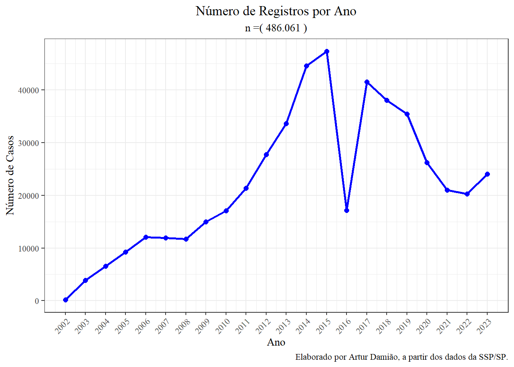
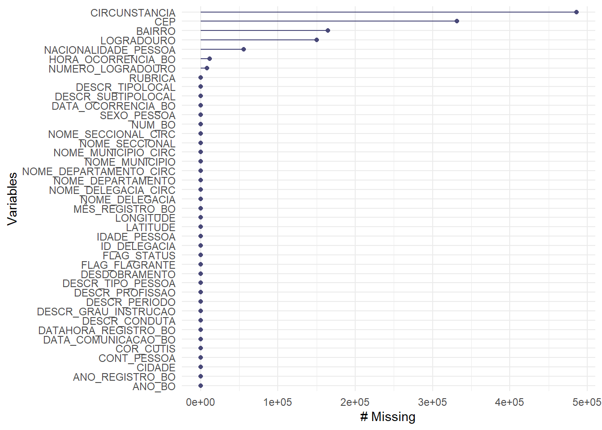

Conhecendo a base de dados
By Artur Damião
January 12, 2025
Introdução
Neste primeiro post, estou registrando que a base de dados SIC 81933249327.xlsb, elencada adiante, apresentou muitos problemas que impossibilita uma análise direta, e aqui servirá de guia para saber o que foi feito ou não. Considero que o formato de dados binário, com a terminação .xlsb, não é muito amigável para a manipulação e tratamento dos dados.
Ao usarmos o R, a função readxlsb::read_xlsb() apresentou limitações significativas. Com isso em mente, fizemos parte das alterações diretamente no Excel, tendo visto a minha familiridade com o seu uso. Por exemplo, a primeira tentativa de unir a base de dados em uma só foi a partir do seguinte código:
data <- readxlsb::read_xlsb(path = "dados/SIC 81933249327.xlsb",
sheet = c("Base de Dados (1)",
"Base de Dados (2)",
"Base de Dados (3)"))
Limpeza no Excel
Descrição da base de dados:
| Coluna | Nome da Base | Tipo de formatação |
|---|---|---|
ANO_BO |
Base de Dados (1) | Número, sem casas decimais |
NUM_BO |
Base de Dados (1) | Número, sem casas decimais |
DATA_OCORRENCIA_BO |
Base de Dados (1) | Data, com * |
HORA_OCORRENCIA_BO |
Base de Dados (1) | Hora, tipo 2, sem segundos |
DATAHORA_REGISTRO_BO |
Base de Dados (1) | Personalizado, dd/mm/aaaa hh:mm |
DATA_COMUNICACAO_BO |
Base de Dados (1) | Data, com * |
CEP 1 |
Base de Dados (1) | Número, sem casas decimais |
NUMERO_LOGRADOURO |
Base de Dados (1) | Número, sem casas decimais |
LATITUDE |
Base de Dados (1) | Texto |
Longitude |
Base de Dados (1) | Texto |
CONT_PESSOA |
Base de Dados (1) | Número, sem casas decimais |
IDADE_PESSOA |
Base de Dados (1) | Número, sem casas decimais |
MÊS_REGISTRO_BO |
Base de Dados (1) | Número, sem casas decimais |
ANO_REGISTRO_BO |
Base de Dados (1) | Número, sem casas decimais |
LOGRADOURO_VERSÃO |
Base de Dados (3) | Coluna excluída 2 |
Manuseando a base de dados no Excel, foi possível observar que não há um padrão para tratar dados vazios ou nulos. Por vezes, eles aparecem como NULL3, 0, 99999 ou como células vazias. Por padrão, sempre que uma coluna possui um caractere textual, mesmo que seja somente um, esta coluna sempre será lida como <chr> ao invés de outro formato, como <dttm> (data) ou dbl (numérico).
Agora, a base de dados se aproxima muito com o que gostaríamos de ter como produto final. Por enquanto, estamos lendo uma “aba” (sheet) por vez porque estávamos impossibilitados de ler tudo de uma vez, ao utilizar a função readxlsb:read_xlsb. Haviam dois problemas:
-
Nosso arquivo era muito grande, e estava demorando muito para carregar (cerca de horas!);
-
O arquivo, que estava salvo inicialmente no formato binário do Excel, possuía muitas células “sobrescritas”, fazendo com que os dados fossem armazenados de maneira e com o formato inadequado.
Portanto, foi necessário ajustar parte dos dados no Excel, como demonstrado acima.
Ademais, a Base de Dados (3) possuía algumas diferenças, como nas seguintes colunas:
-
A coluna
COR_CUTISestava registrada comoCOR_CURTIS; -
Havia uma coluna chamada
LOGRADOURO_VERSAOque não constava no dicionário da base original, tampouco apresentava informações relevantes; -
Há uma coluna diferente (extra), chamada
CIRCUNSTANCIA. Acredita-se ser devido ao fato de que é provável que os dados dessa Base de Dados (3) seja oriundo da PCSP e não da PMSP.
Analisando a base de dados
Inicialmente, vamos analisar a base de dados que conta com o bind_rows(), que uniu as três primeiras abas dos dados, porque as colunas tinham os menos nomes e mesmas características. O bind_rows()faz com que a nossa base de dados tenha um formato mais longo, ao invés de mais largo.
A nossa base de dados final, bd_final.xlsx, contém 41 colunas e 486.061 linhas. Os dados vão de 2002 a 2023. Ao todo, temos 622 municípios disponíveis na base para o Estado de São Paulo.
A Tabela abaixo apresenta a porcentagem de registros de Boletins de Ocorrência (BOs) por cor dos adolescentes:
| Cor | N° de Registros | Porcentagem (%) |
|---|---|---|
| Amarela | 444 | 0.1% |
| Branca | 181.478 | 41.4% |
| Outros | 3.940 | 0.9% |
| Parda | 211.315 | 48.2% |
| Preta | 41.419 | 9.4% |
É possível ver que há uma predominância de adolescentes pardos, seguidos de brancos. Se analisarmos de maneira conjunta os adolescentes pretos e pardos, configurando a categoria “negro” de acordo com o IBGE, observamos que essa população está sobrerepresentanda em nossa amostra, com um total de 57.6%.
Na Figura abaixo, podemos ver como se distribui o número de registros ao longo dos anos, para todo o Estado de São Paulo. Nos indagamos: o que aconteceu entre os anos de 2014 e 2017, para que houvesse um decréscimo no número de registros, logo após o ápice da série histórica?

São questões como essa que motivam a investigação desse problema de pesquisa.
Dados ausentes
Outro ponto interessante a se investigar é como se comportam os valores ausentes na nossa base de dados. Como vimos na Seção de Limpeza, nossa base de dados não apresenta um comportamento padrão quanto ao tratamento de dados ausentes. Eles são representandos de diversas formas, tanto como NULL, NA, 9999 etc. Isso dificulta um pouco o trabalho de organização da base. Ademais, é interessante observar aquilo que não está registrado em nossa base.
O pacote naniar possui uma função que pode ser interessante para nos auxiliar a vislumbrar quais são as variáveis mais ausentes na nossa base.

Observamos que a variável CIRCUNSTANCIA é a que mais apresenta valores faltantes. Isso se dá porque ela é uma variável presente somente na base de dados que constam dados do Sistema de Polícia Judiciária, que continha 23.869 registros, representando aproximadamente 4,9% dos dados. Ao fazermos o join das bases de dados, essa coluna atribuiu valores ausentes (NAs) às demais bases. Ademais, é possível verificar que as variáveis CEP e LOGRADOURO apresentam muitos NAs. Isto é particularmente desvanjatoso para os propositos da minha pesquisa pois ela se trata, em síntese, da investigação dos padrões de atuação das polícias de São Paulo, e um dado muito importante seria justamente aquele que possibilita o georreferenciamento das ocorrências.
-
Para essa variável, constatamos que havia muitos casos com valores zero (0), vazios e com a o caracter “-” (ao todo, 688). Com isso em mente, substituí todos os valores “-” por células vazias, ao passo que transformei essa coluna
CEPem númerica. ↩︎ -
Essa coluna foi excluída porque é incompatível com os valores das colunas das bases anteriores, além de não constar no dicionário de dados enviado pela SSP. Ademais, os valores contidos nela são de aparentemente pouca relevância, sendo numerados de 1 a 6. ↩︎
-
Na segunda aba da planilha, observamos que a coluna
CEPpossuía 6.4% de seus dados apresentados comoNULL. Frente à isso, optei por transformar as células que continham o valorNULLem valores vazios. ↩︎
- Posted on:
- January 12, 2025
- Length:
- 6 minute read, 1070 words
- See Also: